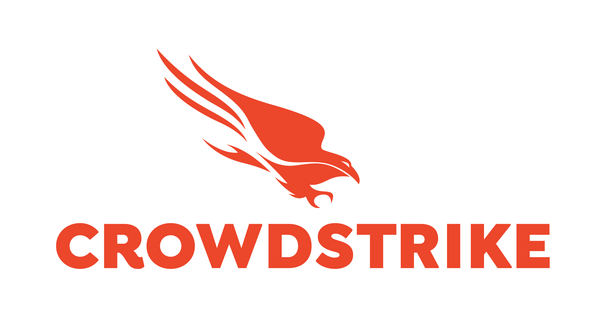
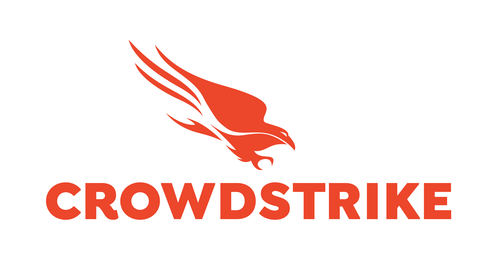

HARRY CLACK
Harry is a dynamic and visionary CEO at the forefront of PARLAR, a groundbreaking cybersecurity firm dedicated to safeguarding the digital landscape. Starting his technology career in 2022, he rapidly advanced through the IT support field, acquiring essential hands-on expertise in troubleshooting, system administration, and strategic problem-solving. This solid foundation has given him a deep understanding of how critical technology is to modern businesses, as well as the vulnerabilities that need to be mitigated.
As a cybersecurity leader, Harry is highly skilled in securing complex networks, configuring robust firewalls, and implementing cutting-edge solutions to detect and neutralise threats before they impact operations. He has a proven track record of protecting businesses from cyberattacks through advanced network security strategies, ensuring data integrity, and securing sensitive information. His expertise in firewall configuration and network architecture is fundamental in building resilient, secure systems that can withstand evolving digital threats.
Harry's leadership is defined by a proactive, innovative mindset and an unyielding dedication to staying ahead of emerging cyber threats. He is committed to providing businesses with comprehensive cybersecurity strategies that not only secure their networks but also enable them to operate with confidence in a digital-first world.
Under Harry's guidance, PARLAR has become a trusted partner for organisations seeking scalable, resilient security solutions. The firm's comprehensive services help businesses strengthen their network defenses, configure state-of-the-art firewalls, and ensure the integrity and availability of their digital infrastructure. With a relentless commitment to excellence and a passion for safeguarding critical systems, Harry is actively shaping the future of cybersecurity, one secure network at a time.


 
